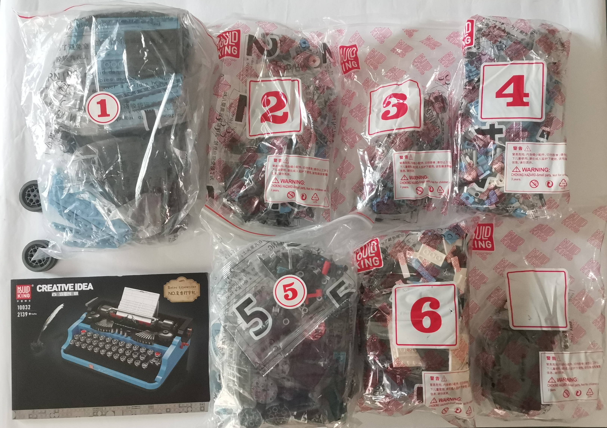

Introduction

A LEGO-style, mainly blue and black coloured retro typewriter, with some parts covered in metallic paint
- Brand: Mould King
- Model: MK 10032
- Age restriction: 14+
- Pieces: 2139+
- Comes with: 6 main packs, a pack of smaller parts, stickers & instruction manual

Set 1


These are the parts of the first set; the goal of this is to construct the base of the typewriter with some gears. Throughout the duration of constructing this first set, we(my brother and I) came across nothing interesting or exciting. Overall impression of this set was that it's easy with little to no challenges.
Challenge(s): When compressing a block over another, they might not be fully connected thus making the overall build a bit bent and not straight.
Solution(s) discovered: Use a rubber hammer to hammer the blocks together or use a cloth to cover the top of the block and use your hand or feet to pound them together.
Finished product should look like this:


Time taken for Set 1: 1hr 51min 36sec
Set 2


These are the parts for the second set. This is a very small set compared to the first one and the goal of this set is to build more parts with gears, complete more of the base and half of the bottom keylevers with the keys. So far into this build, we still faced nothing particularly challenging.
Challenge(s): *No challenge(s) met*
Solution(s): -
The finished prodected should look like this:


Time taken for Set 2: 1hr 29min 30sec
Set 3


These are the parts for the third set. It's another small set with the goal of finishing off the first row of keylevers with keys and the second; contents of the keys including letters and symbols are all inserted for the 2 rows in this set. We faced very minor struggles but managed to get over it very quickly.
Challenge(s): Sometimes the rods are hard to get it in as it fits in very tightly. Rubberbands and keylevers are hard to get in due to the small spaces.
Solution(s): [alternate way] Assemble it elsewhere then attach it to the type writer once done(would be easier than following what the manual told you to do),
[if you decide to follow the manual] Use a hard block to push on the rod to force it in as according to the formula, Pressure = Force/Surface Area, this will decrease the surface area of the force pushing back to you; creating less pressure, thereby decreasing pain towards your hand.(this is the explanation if some of you ask; for those who didn't bother to ask, I'm sorry but not sorry :P)
The finished producted should look like this:


Time taken for Set 3: 1hr 30min 17sec
Set 4


These are the parts for the fourth set and it's a mediocure sized set but with more complexity which is given off by how long it takes to finish this. This set's goal is to finish off the last row of the typewriter's keyboard, more touches with the gears are added in this set.
Challenge(s): A piece of small blue tube went missing or was never seen in the first place.
Solution(s): Gave up on finding, so we left it out. Didn't affect the build much as it's only for asthetics and it's sort of hidden inside when the build is fully completed(view Set 6 below).
The finished producted should look like this:


Time taken for Set 4: 1hr 41min 8sec
Set 5


These are the parts for the fifth set and it's quite a large set, on par with the first set. This set is mainly used for builing and inserting the roller. The construction of the roller was quite mediocure nonetheless but little did I know, the first major and main challenge of the entire build started to crawl into me. It took me around 1.5hr-2hr to construct it but solving the problem took merely 2-3 more extra hours.
Challenge(s): The roller wont fit on the typewriter as it's too short. Problem found was that the combination of length of the rods are not long enough for the roller to fit into the typewriter.
Solution(s): By disassembling the roller, I was able to put the the rods as far away from the connectors connecting the 3 rods together as possible, to the point of few milimetres can make them disconnected and unable to be rolled from turning either side's knob
The finished producted should look like this:


Time taken for Set 5: 5hr
Set 6


These are the parts for the sixth set and it's the largest set of them all. This set finishes off every single touch of the typewriter including carriage return, line indicator, paper bail, carriage centering lever, ribbon spool, typebar, etc.
Challenge(s): *No challenges met*
Solution(s): -
The finished producted should look like this:


Time taken for Set 6: 2hr 31sec